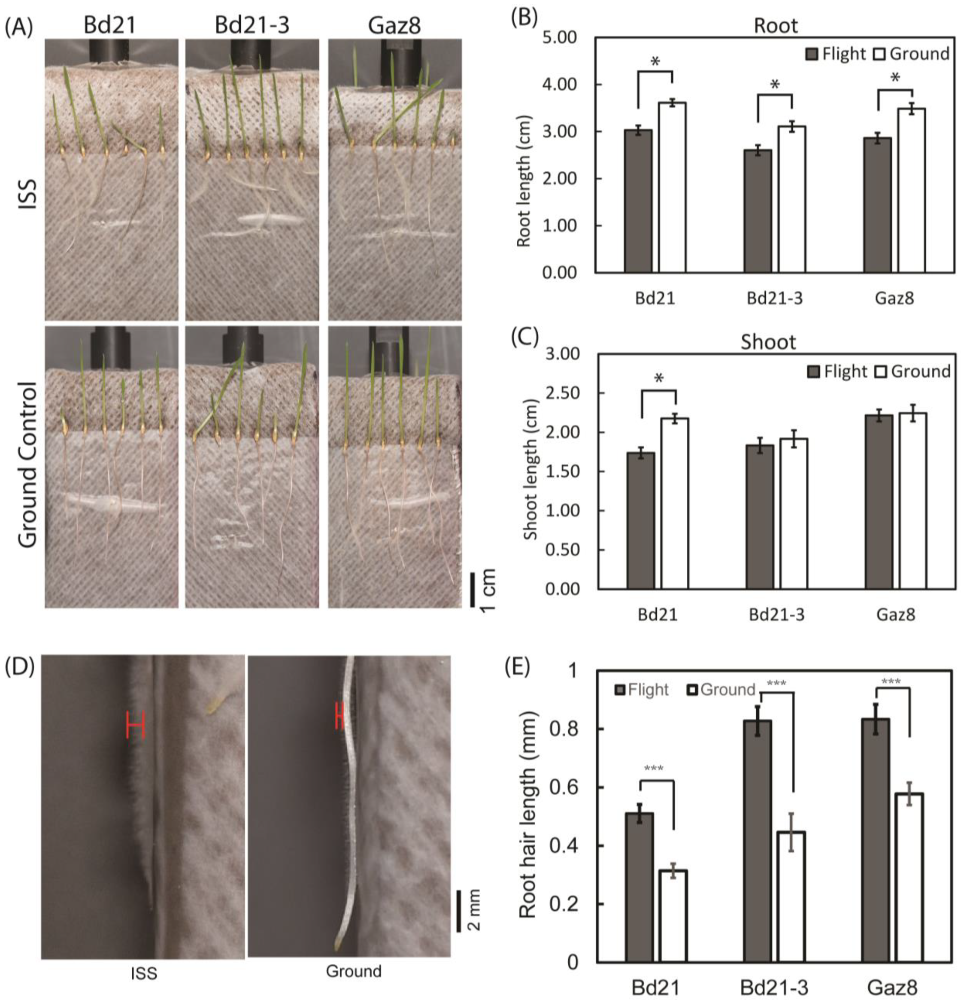
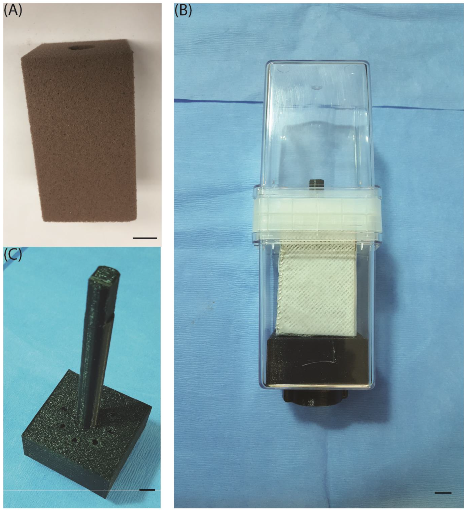

🚀 NASA OSDR OSD-375 (APEX-06) Spaceflight Results
Orbital transcriptome profiling and phenotypic adaptation of Brachypodium distachyon accessions (Bd21, Bd21-3, Gaz8) aboard the International Space Station (ISS SpaceX CRS-14 mission).
📸 Authentic ISS Spaceflight Plant Photographs (APEX-06)

Panel A: Orbital Morphology. 5-day-old Brachypodium distachyon seedlings grown aboard the ISS vs Ground Controls across Bd21, Bd21-3, and Gaz8 (Su et al. 2023, Life 13(3):626, CC BY 4.0).

Panel B: APEX Growth Unit. Central Oasis Horticube foam block support inside VEGGIE flight hardware.
Spaceflight Transcriptome Landscape & Subcellular Site Enrichment

Figure 2. (A) Complete 48-sample experimental design hierarchy across 3 accessions (Bd21, Bd21-3, Gaz8) in roots and shoots. (B) Spaceflight vs Ground DEG volcano plot highlighting gravitropism markers (BdCPK28, BdEXPA1, BdLAZY1, BdPIN2, BdSHMT2). (C) Response magnitudes across accessions. (D) Subcellular site enrichment analysis showing high targeting to the plasma membrane, amyloplast envelope, and Type II cell walls.
Accession-Specific Response Plasticity
Analysis of RNA-Seq count matrices across the three accessions revealed distinct transcriptomic trajectories in microgravity:
- Bd21 (Community Reference): Broadest transcriptional response with 1,027 shoot DEGs and 325 root DEGs ($p_{\text{adj}} < 0.05$).
- Bd21-3 (Transformable Standard): Muted response with fewer DEGs, reflecting genetic divergence from standard Bd21.
- Gaz8 (Turkish Diversity Accession): Pronounced activation of calcium signaling kinases (BdCPK28 $+2.38 \log_2\text{FC}$, BdCAS $+1.75$) and Type II cell wall expansins (BdEXPA1 $+2.50$).
Supplementary Mission & Environmental Parameters (Fig S1)

Supplementary Figure S1. Complete SpaceX CRS-14 flight timeline, VEGGIE chamber environmental regimens (22.0°C, 24h LED photoperiod, 0.5× MS liquid medium, 1.397 mGy radiation dose), and sample harvesting SOPs.